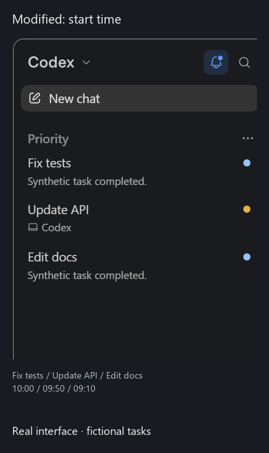

Keep pending requests visible
Orange takes priority over the spinner and yellow plan state. Reading a chat keeps its pending requests; handling them recalculates the indicator.
Windows x64 · Unofficial community tool
Handle several chats without relying on every notification: orange marks pending questions and approvals, yellow marks plans awaiting implementation, and remote projects have readable names.
Newer official packages need a matching release. Check your version before installing.

The demo shows lists, plan states and remote projects using fictional tasks. Orange is explained in the legend below.
Orange takes priority over the spinner and yellow plan state. Reading a chat keeps its pending requests; handling them recalculates the indicator.
Readable names in the sidebar, search and Work picker, with connection and task routing identities preserved.
Existing chats keep valid model and reasoning settings. Ordering follows the selected version's contract; global defaults apply to new chats.
v0.3.6 supports Windows x64 and official package 26.1007.9446.0, plus supported older versions such as 26.924.2738.0 and 26.924.1866.0.
Read the full release compatibility list →
Check Codex version information or Windows Installed apps. Other package numbers, including newer versions, need their own adapted release.
Have Python 3.11 or later, Node.js 22 or later, and available disk space. The installer creates an independent app copy and runs isolated startup checks. The official backend is the default.
irm https://github.com/catterhu1207-ux/codex-desktop-workflow/releases/latest/download/install.ps1 | iex
For an uninstalled complete x64 MSIX, download install.ps1 from the release page and pass -Source with its file path. Its internal version must be supported.
Your official app stays in place. Existing chats require explicit data import and signing in again; the two apps then keep separate data without automatic synchronization.
The 26.1007.9446.0 profile runs three isolated launches, each observed for at least 60 awake seconds. Copying, startup and checks add time; wait for completion.
Downloads → · Chinese installation guide · English installation guide
Share how many chats you handle and which states you miss. For an installation problem, include Windows, official-package and release versions, plus the error message. Use fictional tasks and keep credentials and real chat content on your machine.
Send feedback →